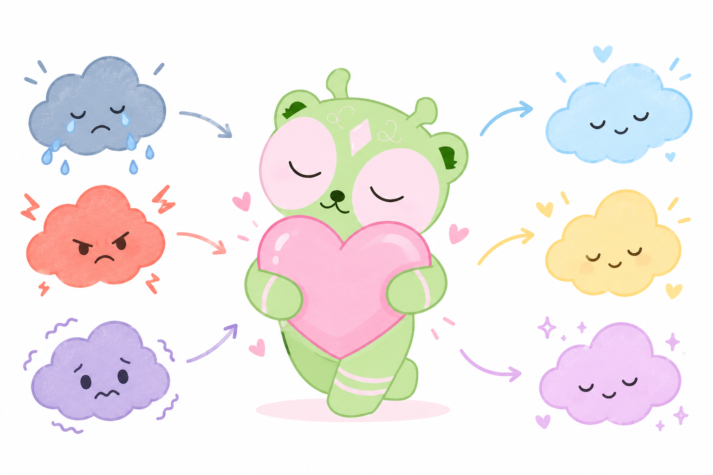
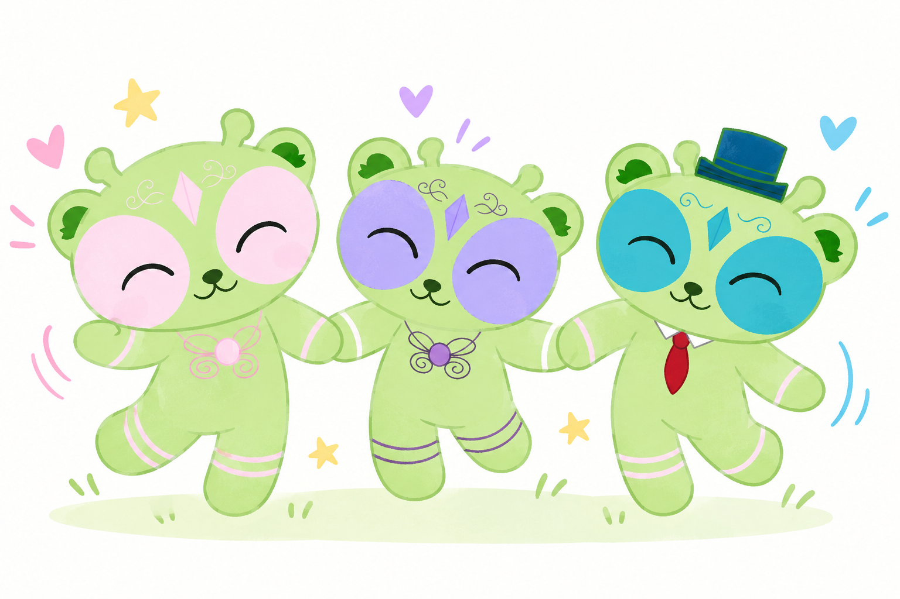

Volver
Efectos del Proyecto: Análisis del Impacto Emocional y Social
El divorcio o la separación de los padres representa un punto de quiebre en la dinámica vital de un niño o niña de 6 a 11 años. La implementación de la caja de herramientas digitales de Raíces de Bienestar genera efectos transformadores en dos grandes dimensiones:
1. Efectos en el Plano Emocional
- Reducción de la culpa y la confusión: a través del mini-cuento y el avatar interactivo, los niños comprenden que la separación es una decisión exclusiva de los adultos, liberándolos de la falsa creencia de que son responsables de la ruptura.
- Gestión y validación de sentimientos: el uso del escudo de palabras permite que el niño identifique, nombre y procese emociones complejas (tristeza, rabia, miedo a lo desconocido), evitando que se repriman o se conviertan en conductas de aislamiento.
- Fortalecimiento de la autoestima y resiliencia: al verse acompañados por herramientas interactivas que validan su experiencia, desarrollan una mayor capacidad de adaptación (resiliencia) ante el cambio, fortaleciendo su autoconcepto positivo de cara al futuro.

2. Efectos en el Plano Social y Relacional
- Mejora en la expresión comunicativa: las dinámicas digitales actúan como un puente facilitador para que los niños puedan expresar lo que sienten no solo en la pantalla, sino también con su entorno (familiares, cuidadores o docentes), reduciendo las barreras del silencio.
- Adaptación saludable a los nuevos entornos familiares: al asimilar el cambio de dinámica en el hogar, el niño reduce los niveles de estrés y ansiedad social, lo que impacta favorablemente en su convivencia diaria y en su desempeño escolar.
- Prevención de repercusiones a largo plazo: al intervenir de manera temprana en la infancia (6 a 11 años), se disminuye la probabilidad de que estas vivencias no procesadas se traduzcan en dificultades de socialización, inseguridades o problemas de conducta en su adolescencia y adultez.
